はじめまして。アリスと申します。ベルギー出身で、母国語はフランス語です。また、英語でのコミュニケーションも可能です。 2024年7月にJLPT N2を取得しました。 現在はHAL名古屋の情報処理学科（2年制）に在籍しており、2年生として学んでいます。私は新しい技術や知識を学ぶことが好きで、日々プログラミングやWeb制作について学んでいます。 以前からAdobe製品を使用したデザイン制作に興味があり、情報処理を専攻しながらWebデザインの専科授業も受講しました。HTML、CSS、JavaScriptを用いたWeb制作だけでなく、Android Studioを使用したスマートフォンアプリ開発にも興味を持ち、アプリ制作にも取り組んでいます。 私は「ものづくり」が好きで、アイデアを形にして人に使ってもらえることにやりがいを感じています。デザインとプログラミングの両方を学びながら、より良いユーザー体験を提供できるエンジニアを目指しています。 ※ポートフォリオ内で使用しているイラストやアニメーションは、生成AIを使用せずに制作しています。制作にはAdobe IllustratorおよびAdobe Photoshopのみを使用しました。
貴社はスマートフォンアプリやWebサービスの開発を通じて、多くのユーザーに価値を提供されており、その高い技術力とユーザー体験を重視する開発姿勢に魅力を感じています。 私は現在、Web制作やアプリ開発について学んでおり、特にHTML、CSS、JavaScriptやAndroid Studioを用いた開発に興味を持っています。学校で学んだ知識だけでなく、自ら調べながら新しい技術を学ぶことにも積極的に取り組んでいます。 また、ベルギー出身であるため、日本とは異なる視点や価値観を持っています。フランス語・英語・日本語を活かしながら、多様な考え方を取り入れたものづくりに貢献したいと考えています。 将来的にはスマートフォンアプリエンジニアまたはWebエンジニアとして成長し、ユーザーに喜ばれるサービスの開発に携わりたいと考えています。 ページ下部には、学校で制作した課題作品やコンテスト参加作品を掲載しております。ぜひご覧ください。